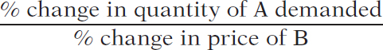
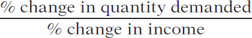

5.3 Other Demand Elasticities
The quantity of a good demanded depends not only on the price of that good but also on other variables. In particular, demand curves shift because of changes in the prices of related goods and changes in consumers’ incomes. It is often important to have a measure of these other effects, and the best measures are—you guessed it—elasticities. Specifically, we can best measure how the demand for a good is affected by prices of other goods using a measure called the cross-price elasticity of demand, and we can best measure how demand is affected by changes in income using the income elasticity of demand.
The Cross-Price Elasticity of Demand
The cross-price elasticity of demand between two goods measures the effect of the change in one good’s price on the quantity demanded of the other good. It is equal to the percent change in the quantity demanded of one good divided by the percent change in the other good’s price.
In Chapter 3 you learned that the demand for a good is often affected by the prices of other, related goods—goods that are substitutes or complements. There you saw that a change in the price of a related good shifts the demand curve of the original good, reflecting a change in the quantity demanded at any given price. The strength of such a “cross” effect on demand can be measured by the cross-price elasticity of demand, defined as the ratio of the percent change in the quantity demanded of one good to the percent change in the price of the other.
(5-7) Cross-price elasticity of demand between goods A and B = 
When two goods are substitutes, like hot dogs and hamburgers, the cross-price elasticity of demand is positive: a rise in the price of hot dogs increases the demand for hamburgers—that is, it causes a rightward shift of the demand curve for hamburgers. If the goods are close substitutes, the cross-price elasticity will be positive and large; if they are not close substitutes, the cross-price elasticity will be positive and small. So when the cross-price elasticity of demand is positive, its size is a measure of how closely substitutable the two goods are, with a higher number meaning the goods are closer substitutes.
151
When two goods are complements, like hot dogs and hot dog buns, the cross-price elasticity is negative: a rise in the price of hot dogs decreases the demand for hot dog buns—that is, it causes a leftward shift of the demand curve for hot dog buns. As with substitutes, the size of the cross-price elasticity of demand between two complements tells us how strongly complementary they are: if the cross-price elasticity is only slightly below zero, they are weak complements; if it is very negative, they are strong complements.
Note that in the case of the cross-price elasticity of demand, the sign (plus or minus) is very important: it tells us whether the two goods are complements or substitutes. So we cannot drop the minus sign as we did for the price elasticity of demand.
Our discussion of the cross-price elasticity of demand is a useful place to return to a point we made earlier: elasticity is a unit-free measure—that is, it doesn’t depend on the units in which goods are measured.
To see the potential problem, suppose someone told you that “if the price of hot dog buns rises by $0.30, Americans will buy 10 million fewer hot dogs this year.” If you’ve ever bought hot dog buns, you’ll immediately wonder: is that a $0.30 increase in the price per bun, or is it a $0.30 increase in the price per package (buns are usually sold in packages of eight). It makes a big difference what units we are talking about! However, if someone says that the crossprice elasticity of demand between buns and hot dogs is −0.3, it doesn’t matter whether buns are sold individually or by the package. So elasticity is defined as a ratio of percent changes, as a way of making sure that confusion over units doesn’t arise.
The Income Elasticity of Demand
The income elasticity of demand is the percent change in the quantity of a good demanded when a consumer’s income changes divided by the percent change in the consumer’s income.
The income elasticity of demand is a measure of how much the demand for a good is affected by changes in consumers’ incomes. It allows us to determine whether a good is a normal or inferior good as well as to measure how intensely the demand for the good responds to changes in income.
(5-8) Income elasticity of demand = 
Just as the cross-price elasticity of demand between two goods can be either positive or negative, depending on whether the goods are substitutes or complements, the income elasticity of demand for a good can also be either positive or negative. Recall from Chapter 3 that goods can be either normal goods, for which demand increases when income rises, or inferior goods, for which demand decreases when income rises. These definitions relate directly to the sign of the income elasticity of demand:
When the income elasticity of demand is positive, the good is a normal good. In this case, the quantity demanded at any given price increases as income increases.
When the income elasticity of demand is negative, the good is an inferior good. In this case, the quantity demanded at any given price decreases as income increases.
The demand for a good is income-elastic if the income elasticity of demand for that good is greater than 1.
The demand for a good is income-inelastic if the income elasticity of demand for that good is positive but less than 1.
The demand for a good is income-elastic if the income elasticity of demand for that good is greater than 1. When income rises, the demand for income-elastic goods rises faster than income. Luxury goods such as second homes and international travel tend to be income-elastic. The demand for a good is income-inelastic if the income elasticity of demand for that good is positive but less than 1. When income rises, the demand for income-inelastic goods rises, but more slowly than income. Necessities such as food and clothing tend to be income-inelastic.
152
 GLOBAL COMPARISON
GLOBAL COMPARISON
Food’s Bite in World Budgets
If the income elasticity of demand for food is less than 1, we would expect to find that people in poor countries spend a larger share of their income on food than people in rich countries. And that’s exactly what the data show. In this graph, we compare per capita income—a country’s total income, divided by the population—with the share of income that is spent on food. (To make the graph a manageable size, per capita income is measured as a percentage of U.S. per capita income.)
In very poor countries, like Pakistan, people spend a large percent of their income on food. In middle-income countries, like Israel and Mexico, the share of spending that goes to food is much lower. And it’s even lower in rich countries like the United States.
ECONOMICS in Action
Spending It
 | interactive activity
| interactive activity
The U.S. Bureau of Labor Statistics carries out extensive surveys of how families spend their incomes. This is not just a matter of intellectual curiosity. Quite a few government benefit programs involve some adjustment for changes in the cost of living; to estimate those changes, the government must know how people spend their money. But an additional payoff to these surveys is data on the income elasticity of demand for various goods.
What stands out from these studies? The classic result is that the income elasticity of demand for “food eaten at home” is considerably less than 1: as a family’s income rises, the share of its income spent on food consumed at home falls. Correspondingly, the lower a family’s income, the higher the share of income spent on food consumed at home.
In poor countries, many families spend more than half their income on food consumed at home. Although the income elasticity of demand for “food eaten at home” is estimated at less than 0.5 in the United States, the income elasticity of demand for “food eaten away from home” (restaurant meals) is estimated to be much higher—close to 1.
Families with higher incomes eat out more often and at fancier places. In 1950, about 19% of U.S. income was spent on food consumed at home, a number that has dropped to 6.1% in 2012. But over the same time period, the share of U.S. income spent on food consumed away from home has stayed constant at 5%. In fact, a sure sign of rising income levels in developing countries is the arrival of fast-food restaurants that cater to newly affluent customers. For example, McDonald’s can now be found in Hanoi, Jakarta, and Mumbai.
There is one clear example of an inferior good found in the surveys: rental housing. Families with higher income actually spend less on rent than families with lower income, because they are much more likely to own their own homes. And the category identified as “other housing”—which basically means second homes—is highly income-elastic. Only higher-income families can afford a luxury like a vacation home, so “other housing” has an income elasticity of demand greater than 1.
153
Question 5.6
1. After Chelsea’s income increased from $12,000 to $18,000 a year, her purchases of music downloads increased from 10 to 40 album downloads per year. Calculate Chelsea’s income elasticity of demand for albums using the midpoint method.
Question 5.7
2. Expensive restaurant meals are income-elastic goods for most people, including Sanjay. Suppose his income falls by 10% this year. What can you predict about the change in Sanjay’s consumption of expensive restaurant meals?
Question 5.8
3. As the price of margarine rises by 20%, a manufacturer of baked goods increases its quantity of butter demanded by 5%. Calculate the cross-price elasticity of demand between butter and margarine. Are butter and margarine substitutes or complements for this manufacturer?
Solutions appear at back of book.
Quick Review
Goods are substitutes when the cross-price elasticity of demand is positive. Goods are complements when the cross-price elasticity of demand is negative.
Inferior goods have a negative income elasticity of demand. Most goods are normal goods, which have a positive income elasticity of demand.
Normal goods may be either income-elastic, with an income elasticity of demand greater than 1, or income-inelastic, with an income elasticity of demand that is positive but less than 1.